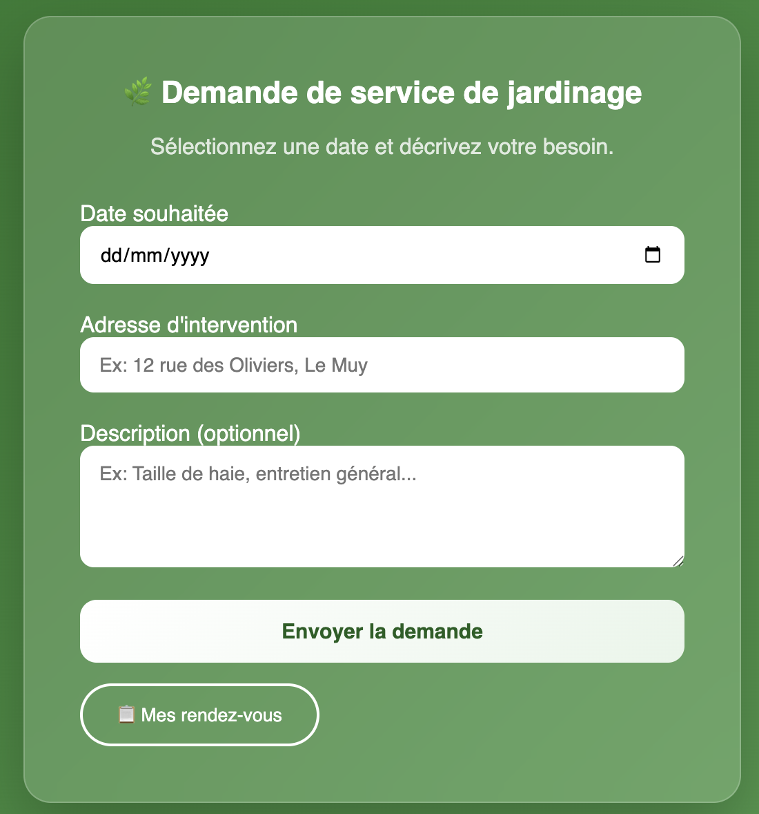
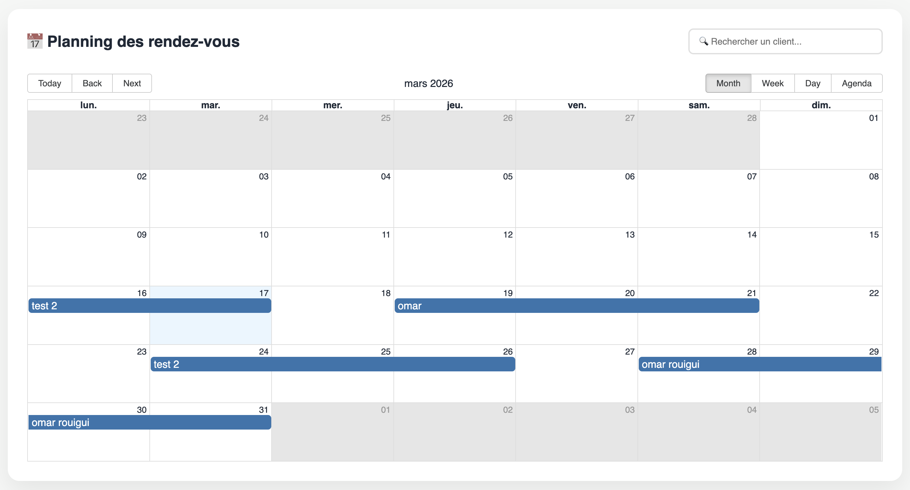
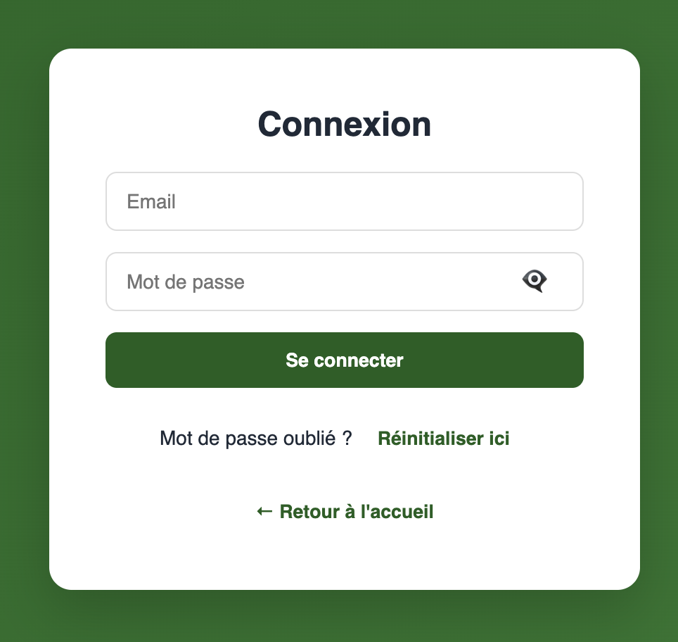

A simple platform that connects clients with gardening services and allows easy appointment management.
View the Project
Customers can submit gardening service requests through a simple form.

The administrator manages all appointments using an interactive calendar.

The system uses authentication and role-based access control for security.
Manage appointments and requests easily through the JR Jardinage platform.
This project was inspired by the need to simplify how customers schedule gardening services. Many small service providers still manage appointments manually, which creates confusion and inefficiency.
This project was developed as a Portfolio Project for Holberton School. It focuses on creating a clean, simple, and efficient system for managing appointments.
React • Flask • REST API • SQLite
English / French support (multi-language interface)
Core Features
Stack Application
Languages Supported
GitHub Repository: View Project
Omar Rouigui